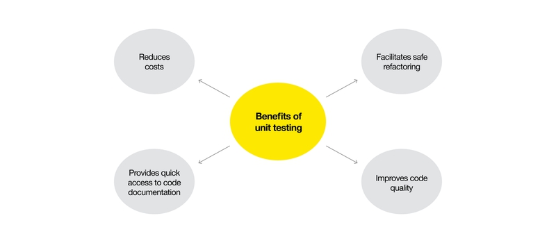
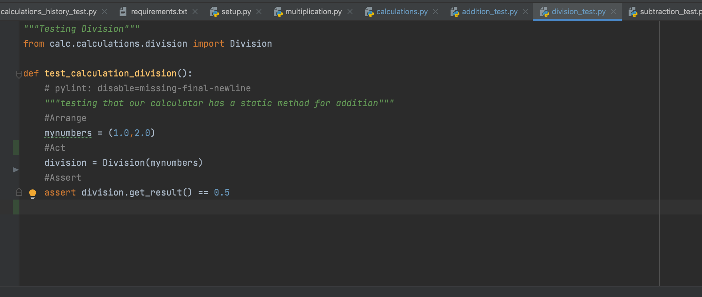

A unit test is a method that instantiates a small portion of our application and verifies its behavior independently from other parts.Its primary purpose is to test each unit or function. A unit is the smallest testable part of an application. It mainly has one or a few inputs and produces a single output. In procedural programming, a unit referred to as an individual program, while object-oriented programming languages include Base/Superclass, abstract class, Derived/Child class takes place.
The main purpose of unit testing is to isolate each part of the program and prove that the individual parts work correctly.
There are the benefits of Unit Testing:
In Project development , unit testing makes the coding process easier and more agile, developers check each unit for bugs, fix errors, and connect tested units to other parts of the product.
Developers write test cases before coding, they think more about the possible error they might get, which is called test-driven development
Unit testing provides documentation such as SRS, FRD etc... so that allows developers to learn what functionality is. It is important for a developer in case of changing the feature.
The cost of detecting an error in a unit is significantly lower than the cost of detecting, identifying, and correcting the error on other levels of software testing. When errors are discovered at later stages, it usually leads to many system changes and a loss of time and money.
Let's discuss the principals of a good unit test :
Developers write test cases, they can have a record of all test cases. It should be easy to code all of those test routines without any effort.
A goof unit test tells a user story about some behavioral aspect of our application, so it should be easy to understand which scenario is being tested and if it fails, it would be easier to detect how to address the error so that we can fix the bug.
Good unit tests should be reproducible and independent from external factors such as the environment or running order.
If unit tests are slow, developers are more likely to skip running them on their own machines.Slow unit tests may also indicate that either the system under test, or the test itself, interacts with external systems, making it environment-dependent.
One of the ways of writing good test:
| Test Pattern | Description |
|---|---|
| Arrange | inputs and targets. Arrange steps should set up the test case. Does the test require any type of settings? Does it need to prepare a data? Does it need to log into a web app? |
| Act | on the target behavior. Act step cover the main thing to be tested. This is also be called a REST API or interacting with web page. |
| Assert | expected outcomes. Act steps should evoke such responses. Assert keeps verify the goodness or badness of that response. Sometimes, it just checks numeric or string values. |
Here is a good example from a Division Test file of a calculator program:
Unit testing is the most important part of the software development process that helps you ensure the high quality of your product. It allows developers to check the performance of every and each unit and prevent possible errors in advance. Throughout the development lifecycle, unit tests save your time and money and help make code quality better.